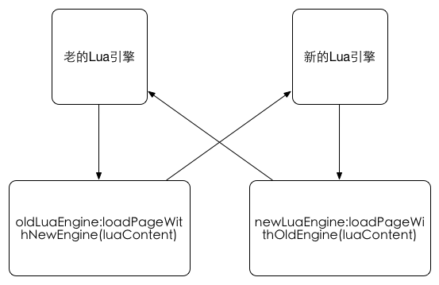
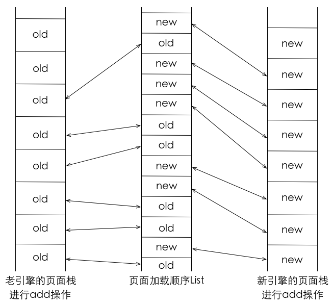

| 版本号 | 日期 | 作者 | 描述 |
|---|---|---|---|
| V1.0 | 2015.6.30 | 李浩(li.hao85) | 双引擎改造实现原理描述 |
以往项目组在升级产品新框架时，由于产品框架的兼容性问题，往往需要将旧框架的所有业务和扩展实现都在新框架中重新实现一遍，耗费项目组大量的人力和时间。因此，我们提出双引擎的升级方案，即在旧框架的基础上，嵌入最新的产品框架，实现两套引擎并行运行，已存在的旧业务依旧由旧引擎处理，新添加的业务由新框架处理，后续项目组可以慢慢将旧业务移植到新框架中，实现旧框架到新框架的平滑升级。
现阶段，我们需要在交行5.0的代码基础上，嵌入5.2产品框架，设计要求如下：
进行双引擎改造的最终结果是实现新旧业务的平滑过渡。当进行了双引擎改造后，老的业务还是走原来的解析流程，从某个时间点起(如2015.6.30)，之后的新业务都使用新的引擎进行处理。这样老业务不必全盘重写。
之后老业务模块可以一点一点慢慢改造，使用新的引擎来处理，最终全部老业务都会迁移到新引擎上，原来的旧引擎便可停止使用了。这段迁移期内，老引擎依然可以工作。
所以进行双引擎改造后，一开始的一段时间，新引擎用的比较少；之后随着旧业务的不断迁移，新引擎的使用量就会增多起来。
以交通银行为例，旧的业务流程如下(大体示意)：
启动页面：com.bankcomm.ui.SplashScreenActivity。
SplashScreenActivity的onWindowFocusChanged方法会跳转到真正的Activity(此处是九宫格)。
onWindowFocusChanged(Boolean) -> startApp() -> initAppData() -> 发送handler消息(1000) -> 接收handler消息(1000) -> initSwitchView()或者goMainHome() -> 进入BOCMainHome，这个是主页面 -> SplashScreenActivity走finish()。
其中initSwitchView()是用来切换大学生版本的。
这样主页面就拐到BOCMainHome上。
BOCMainHome这个Activity的onCreate方法流程如下(部分)：
建立加密信道用的是connectHandShake()方法：
/**
* 建立加密信道
*/
public void connectHandShake() {
TimerTask timetask = new TimerTask() {
@Override
public void run() {
LPMid.getInstance().um_.handleFirstRequest(BOCMainHome.this,handler);
}
};
// Timer time = new Timer();
// time.schedule(timetask, 1000);
// update by xiao
new Timer().schedule(timetask, 1000);
}
其中handleFirstRequest(final Activity, final Handler)用来建立加密信道。
另外，建立加密信道，起码需要一个服务器地址和证书，这些数据位于Utils类中：
// 生产证书
public static String CERTIFICATE = "root_p.png";
//生产地址
public static String SERVER_URI = "http://mbank.95559.com.cn:8083";
九宫格出来了、加密信道也建立完成了，接下来就等待用户和屏幕上的元素进行交互了。
还是看BOCMainHome的init()方法，其中初始化了九宫格上各个元素，并且布置了多个单击事件：
// 注册click事件
certTypeParent.setOnClickListener(this);
hideView.setOnClickListener(this);
btnForgetPass.setOnClickListener(this);
loginButton.setOnClickListener(this);
btnFindUserName.setOnClickListener(this);
btnforgetPassword.setOnClickListener(this);
registerButton.setOnClickListener(this);
((ImageView)findViewById(R.id.setback)).setOnClickListener(this);
((ImageView)findViewById(R.id.add_contact)).setOnClickListener(this);
其实主体部分的很多业务按钮是通过报文来实现页面跳转的。
首次建立加密信道后会返回报文，考察handleFirstRequest方法可知返回的报文如下：
{
"updateStatus": "NO",
"IsMigrate": "true",
"downloadfrom": "http://mbank.95559.com.cn:8083/ebank/mobile/jtyh2g.apk",
"iosCliPage": "",
"wp8CliPage": "",
"offlineFile": "mainPage.json",
"menuUp": "/ebank_s/menuUp",
"pushNotices": [],
"unreadCount": "0",
"ad": [
{
"img_url": "https://mmbiz.qlogo.cn/mmbiz/jTpAe0MF7pGsZ6r6z83qPlqLqWzB6VDU7PB6NmlcU8Nx6bWOFx6n9P65gicckuOId76Qh9AqeTJ5F9KK6gAUKLQ/0",
"content_url": "inner:http://www.chord-asia-preview.com/cread/index.html"
},
{
"img_url": "http://www.bankcomm.com/BankCommSite/upload/infos/201501/09/37914/20150109140943_3.png",
"content_url": "inner:http://www.bankcomm.com/BankCommSite/upload/infos/201412/01/37614/fangzhizhapianmobile/index.html"
}
],
"ebankMenu": {
"coid": "my_favorite",
"name": "我的首页",
"recommend": [
{
"id": "account_query",
"name": "账户查询",
"url": "local:second_account_query.xml"
},
{
"id": "event_announcements",
"name": "消息中心",
"url": "local:second_event_announcements.xml"
},
{
"id": "phone_one_for_ten",
"name": "新开户有礼",
"url": "/app_s/run?id=phone_one_for_ten"
}
],
"user": [
{
"id": "red_friday",
"name": "最红星期五",
"url": "/app_s/run?id=red_friday"
},
{
"id": "account_manager",
"name": "账户管理",
"url": "local:second_account_manager.xml"
},
{
"id": "change_account",
"name": "转账汇款",
"url": "local:second_change_account.xml"
},
{
"id": "list_booking",
"name": "预约取款",
"url": "/app_s/run?id=list_booking&tranCode=lp0001"
},
{
"id": "beneficial_treasure",
"name": "得利宝",
"url": "/app_s/run?id=beneficial_treasure&tranCode=mb0642"
}
]
}
}
全局查找“ebankMenu”关键字即可了解到这段json是如何被使用的：
DataStorage类 -> initUpdateJson(String) -> parseMyHomeChannel(JSONObject) -> parseChannelJson(JSONArray)。
解析出来了两个list：recommendList和userList，最终两个list都会合并到array1变量中。
在BOCMainHome的init方法中，初始化了主体九宫格：
bcmHomeView = new BCMHomeView(this);
BCMHomeView构造方法里面的流程如下：init() -> createView() -> 分配点击动作，即执行doAction(int, int)。
其中doAction方法依然在BCMHomeView中，通用的跳转方法是：
Utils.printOutToConsole("onClick url------------> " + url);
LPMid.getInstance().um_.gotoEmpViewFromHome(bv, url,"");
此方法位于UserManager类中，其实大部分请求走的还是sendPostRequest方法。
刷新页面用的是LuaLocation类的replace方法，只不过5.0框架的Lua使用的是luajava包，而不是luac的api。而且交行的replace只有两个重载，两个全是同步的。
LuaHistory类的add和get两个接口分管旧报文的压栈和出栈。同样的，用的是luajava包。
add方法如下：
public static void add(String content) {
if (null == Component.ACTIONV)
Component.ACTIONV = new Stack();
if (content != null) {
int lastIndex = content.lastIndexOf("</body>");
if (lastIndex == -1)
return;
Component.ACTIONV.add(content);
}
}
从中可以了解到：
get方法流程考察：设get方法的参数为整型变量index。
按照第一部分《需求》的描述，交行双引擎改造主要从以下几个方面着手进行：
SplashScreenActivity中发送的1000号消息是进行页面跳转的，改为调到新的Activity。新的Activity用加载本地报文的方法建立加密信道，进行后续操作。
新的加密信道需要两个地址，一个是带有端口号的，一个是不带的，需要在Utils类中进行增加(可能要修改交行自有的产品，这个再讨论)。
主页面换成本地的main.xml文件，内容可以做成和原来旧引擎页面相同的样子，只是其中的Lua语句部分需要使用新的tls接口来建立加密信道。
另外离线资源也是使用新的Lua接口来实现的。
既要保留原有的Lua接口，同时又要使用新的Lua函数库，因此要开启两个Lua状态机。图示如下：

两个引擎解析报文的流程分析：
以上就是通过建立两个Lua接口来分隔开新老两个引擎的方法。其中老引擎部分需要初始化一些数据，如老控件登记列表(widget.xml)、老的config文件，但是老的离线资源不必初始化，因为离线部分改为新引擎实现。
这里主要是为了解决新老引擎对报文历史栈的跳转问题，使得两个历史栈能够在back操作中顺利地衔接上。
新引擎对报文的压栈与出栈方法与旧引擎的比较：
新旧引擎的history库里基本方法有四个：add、get、length(取栈长度)、clear(清空历史栈)。考虑到新旧引擎的页面有可能穿插，因此需要另外一个变量(list、vector、stack等类型，只要带有顺序特征的都可以)，用于存放新旧引擎页面加载的顺序。图示如下：

说明：
图中新旧两个引擎都在执行add操作，只是每次add操作完成后，向中间的list填写一下刚add过的页面是哪个引擎的页面，这个list只存储new和old两种信息，体积不会很大，之后备用。
接下来执行get方法的时候，不论是新引擎还是旧引擎，都先从中间的list上执行get操作，举例：比如图中的情况，当前页面处于中间list最上边的new那里，此时新引擎执行get(-5)操作(旧引擎也会有同样的推理)：
对于取length操作，可以直接取list的长度(新旧两个页面栈的长度和)。clear操作也可同时清空新旧两个页面栈和中间的list。
以上是新旧两个页面报文栈合并的思路。
对于物理back键，需要使用新的历史库，从而调用图中页面加载顺序list，这样来实现两个历史栈的页面跳转。